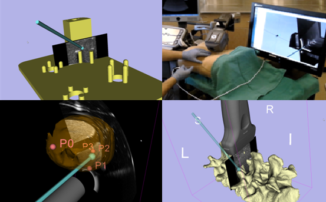
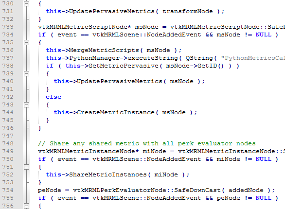

-  Configurable
-  Open-source
Builds on a dynamic platform
PerkTutor is an extension of 3D Slicer, a free, open source software for visualization and image analysis. PerkTutor can be installed from the 3D Slicer Extension Manager on Windows, Mac, and Linux to use all the advanced features of 3D Slicer for intervention training.
Flexible training framework
Modules of the PerkTutor extension are designed so you can teach and learn interventions without programming. PerkTutor offers the flexibilty to support many different needle-based interventions, including spinal, prostate, and central line applications.
PerkTutor is open research
Our development and research work is public, including source code, data, experiment protocols, manuals, etc. PerkTutor is distributed under BSD license allowing academic and commercial use without any restrictions.
PerkTutor Recent Updates
January 15, 2015
Transform and anatomy roles have been added to the PerkTutor. This allows users to define metrics which are specific to anatomy, such as tissue or target points, and specifc to tools, such as needles or ultrasound probes.
December 11, 2013
User-configurable metrics have been added to the PerkTutor. This allows users to define their own evaluation metrics using Python scripts. See User-Configurable Metrics for details.